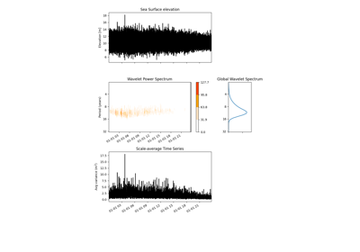
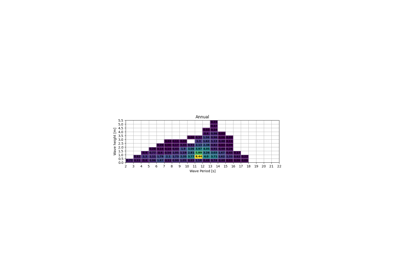
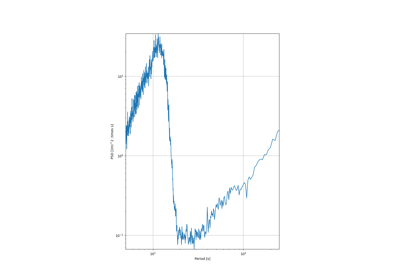
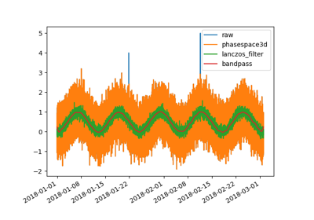
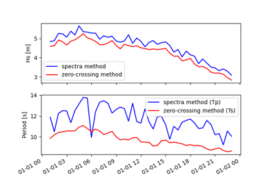
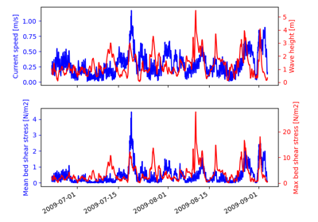
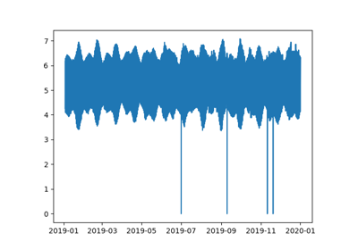

Gallery¶
Thermocline examples
Skew surge examples

Wavelet examples
Percentage of occurence example
Percentage of occurence example

Joint probability plot example
Joint probability plot example
Density histogramm examples

Wave spectra examples
BIAS histogramm examples
QQ plot examples

Filters examples

Sea level to wave examples
Cyclone removal

Create bed shear stress example
Create bed shear stress example

Linz post-processing examples